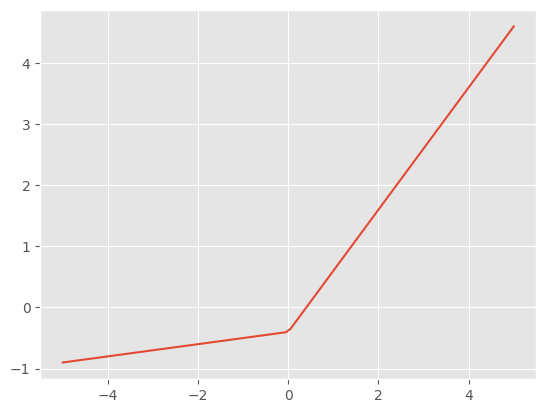
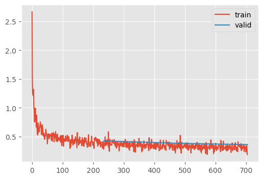

set_seed(42)
plt.style.use("ggplot")Initializations
Weights should be initialized apropriately
Adapted from:
Probability, misc
| Topic | Description | Formula |
|---|---|---|
| Average Error | Typically 0 because positive and negative errors cancel out, making this metric not useful. | $ = y_{true} - y_{pred} $ |
| Variance | The expected value of the squared deviation from the mean of a random variable. | \(\sigma^2 = \sum \frac{(x-\mathbb{E}[X])^2}{N}\) \(\sigma^2 = \mathbb{E}[X^2] - \mathbb{E}[X]^2\) |
| Covariance | A measure of the joint variability of two random variables. | \(\operatorname{cov}(X,Y) = \operatorname{E}{\big[(X - \operatorname{E}[X])(Y - \operatorname{E}[Y])\big]}\) |
| Pearson Correlation Coefficient | A normalized measure of the linear relationship between two variables. | \(\rho_{X,Y}= \frac{\operatorname{cov}(X,Y)}{\sigma_X \sigma_Y}\) |
Baseline
Let’s look at a fashion MNIST classification problem. Our goal is to get accuracy to at least 90%.
class CNN(nn.Module):
"""Six layer convolutional neural network"""
def __init__(self):
super().__init__()
self.layers = nn.Sequential(
Conv2dWithReLU(1, 8, kernel_size=5, stride=2, padding=2), # 14x14
Conv2dWithReLU(8, 16, kernel_size=3, stride=2, padding=1), # 7x7
Conv2dWithReLU(16, 32, kernel_size=3, stride=2, padding=1), # 4x4
Conv2dWithReLU(32, 64, kernel_size=3, stride=2, padding=1), # 2x2
nn.Conv2d(64, 10, kernel_size=3, stride=2, padding=1), # 1x1
)
def forward(self, x):
x = self.layers(x)
return rearrange(x, "bs c w h -> bs (c w h)")Let’s start by finding the learning rate.
This diverges very quickly
TrainLearner(
CNN(),
fashion_mnist(),
F.cross_entropy,
lr=0.6,
cbs=[LRFinderCB(), MomentumCB()],
).fit()That’s unusable. Let’s dial down the learning rate increase and start at a lower learning rate.
LRFinderCB?Init signature: LRFinderCB(gamma=1.3, max_mult=3) Docstring: Find an apopriate learning rate by increasing it by a constant factor for each batch until the loss diverges File: ~/Desktop/SlowAI/nbs/slowai/learner.py Type: type Subclasses:
TrainLearner(
CNN(),
fashion_mnist(64),
F.cross_entropy,
lr=1e-2,
cbs=[LRFinderCB(gamma=1.05), MomentumCB()],
).fit()model = CNN()
stats = StoreModuleStatsCB(mods=model.layers)
cbs = [
MomentumCB(),
MetricsCB(MulticlassAccuracy(num_classes=10)),
DeviceCB(),
ProgressCB(plot=True),
stats,
]
TrainLearner(
model,
fashion_mnist(),
F.cross_entropy,
lr=0.6,
cbs=cbs,
).fit(2)| MulticlassAccuracy | loss | epoch | train |
|---|---|---|---|
| 0.168 | 2.378 | 0 | train |
| 0.100 | 2.301 | 0 | eval |
| 0.203 | 2.170 | 1 | train |
| 0.489 | 1.624 | 1 | eval |
stats.hist_plot()The issue with neural networks in real life is that they must be represented by discrete data structures. These can overflow…
x = torch.randn(200, 100)
for i in range(50):
x = x @ torch.randn(100, 100)
x[0:5, 0:5]tensor([[nan, nan, nan, nan, nan],
[nan, nan, nan, nan, nan],
[nan, nan, nan, nan, nan],
[nan, nan, nan, nan, nan],
[nan, nan, nan, nan, nan]])…or underflow..
x = torch.randn(200, 100)
for i in range(50):
x = x @ torch.randn(100, 100) * 0.01
x[0:5, 0:5]tensor([[0., 0., 0., 0., 0.],
[0., 0., 0., 0., 0.],
[0., 0., 0., 0., 0.],
[0., 0., 0., 0., 0.],
[0., 0., 0., 0., 0.]])We should scale our weights such that, throughout the training process, the mean remains near 0 and the standard deviation remains near 1. Otherwise, we are suseptible to these “dead units”
Glorot/Xavier
Normally, the mean variance of a layer is approximately the number of output dimensions
for d in [1, 100]:
means = []
sqrs = []
for _ in range(500):
x = torch.randn(d)
a = torch.randn(512, d)
y = a @ x
means.append(y.mean())
sqrs.append(y.pow(2).mean())
res = torch.stack(means).mean(), torch.stack(sqrs).mean()
print(res)(tensor(-0.0011), tensor(1.1372))
(tensor(-0.0029), tensor(100.2205))To encourage of variance of 1, the paper from Xavier Glorot and Yoshua Bengio proposed that each layer have a coefficient of \(\frac{1}{\sqrt{d}}\) where \(d\) is the number of inputs
d = 100
x = torch.randn(200, d)
for i in range(50):
layer = torch.randn(d, d) * (1 / math.sqrt(d))
x = x @ layer
x[0:5, 0:5]tensor([[ 1.7367, -0.3418, -2.1874, -0.9467, 1.0451],
[ 0.7802, 0.3702, -0.9278, 0.1607, 0.7578],
[-2.0552, 1.0210, 1.7889, 0.1260, -1.0092],
[-0.4922, -0.1349, 0.0443, -0.3037, -0.1711],
[ 0.0103, 0.0468, -0.6201, -1.1773, 0.1258]])Indeed, this gives us reasonable numbers! However, this doesn’t work for modern deep learning because of the activation layers.
Kaiming/He init
Notice that the first layer of a neural network has a favorable activation distribution
d1, d2 = 100, 100
x = torch.randn(200, d1)
y = torch.randn(200)
w = torch.randn(d1, d2) / math.sqrt(d1)
b = torch.zeros(d2)l1 = x @ w + b
l1.mean(), l1.std()(tensor(0.0034), tensor(0.9888))But what happens when we add non-linearities?
def relu(x):
return x.clamp_min(0.0)
l1r = relu(l1)
l1r.mean(), l1r.std()(tensor(0.3943), tensor(0.5795))Indeed, this property is lost…thus goes the path to ruin…
l = l1r
for _ in range(50):
w = torch.randn(d2, d2) * math.sqrt(1 / d2)
l = relu(l @ w)
l[0:5, 0:5]tensor([[3.6994e-08, 0.0000e+00, 9.4013e-09, 1.5577e-08, 1.0590e-08],
[5.5068e-08, 0.0000e+00, 1.1871e-08, 2.4266e-08, 1.3567e-08],
[9.3161e-08, 0.0000e+00, 2.2955e-08, 4.0294e-08, 2.4063e-08],
[4.9314e-08, 0.0000e+00, 1.1283e-08, 2.1542e-08, 1.3132e-08],
[3.8813e-08, 0.0000e+00, 9.7021e-09, 1.6069e-08, 1.1153e-08]])To rectify this situation, Kaiming proposed using \(\sqrt{\frac{2}{d}}\)
l = l1r
for _ in range(50):
w = torch.randn(d2, d2) * math.sqrt(2 / d2)
l = relu(l @ w)
l[0:5, 0:5]tensor([[0.0218, 0.0350, 0.0000, 0.4040, 0.0000],
[0.1481, 0.0000, 0.0000, 0.5991, 0.0000],
[0.0582, 0.1006, 0.0000, 0.7180, 0.0162],
[0.1623, 0.0000, 0.0000, 0.9592, 0.0000],
[0.1217, 0.0169, 0.0000, 0.6792, 0.0000]])Notice, there are still positive numbers even after 50 layers!
This is the best way to initialize a network. But how do we do this on a code level? We use the .apply() method.
def init_weights(module):
# `kaiming_normal_` is an in-place operation, unlike `kaiming_normal`
if not isinstance(module, (nn.Sequential, Conv2dWithReLU, CNN)):
init.kaiming_normal_(module.weight)model = CNN()
model.apply(init_weights)
learn = TrainLearner(
CNN(),
fashion_mnist(64),
F.cross_entropy,
lr=1e-2,
cbs=[LRFinderCB(gamma=1.05), MomentumCB()],
).fit()Better! Let’s try training with 0.25.
model = CNN()
model.apply(init_weights)
stats = StoreModuleStatsCB(mods=model.layers)
cbs = [
MetricsCB(MulticlassAccuracy(num_classes=10)),
DeviceCB(),
ProgressCB(plot=True),
MomentumCB(),
stats,
]
TrainLearner(
model,
fashion_mnist(),
F.cross_entropy,
lr=0.25,
cbs=cbs,
).fit(2)| MulticlassAccuracy | loss | epoch | train |
|---|---|---|---|
| 0.549 | 1.430 | 0 | train |
| 0.673 | 0.951 | 0 | eval |
| 0.749 | 0.665 | 1 | train |
| 0.752 | 0.646 | 1 | eval |
stats.mean_std_plot()That’s okay! Keep in mind, I did globally normalize the inputs.
Let’s try normalizing batchwise.
BatchTransformCB
BatchTransformCB (tfm, on_train=True, on_val=True)
Arbitrarily transform a batch
NormalizeBatchCB
NormalizeBatchCB (on_train=True, on_val=True)
Unit normalize a batch
model = CNN()
model.apply(init_weights)
stats = StoreModuleStatsCB(mods=model.layers)
dls = fashion_mnist()
cbs = [
MetricsCB(MulticlassAccuracy(num_classes=10)),
DeviceCB(),
ProgressCB(plot=True),
NormalizeBatchCB(),
MomentumCB(),
stats,
]
learn = TrainLearner(
model,
dls,
F.cross_entropy,
lr=0.25,
cbs=cbs,
)
learn.fit(2)| MulticlassAccuracy | loss | epoch | train |
|---|---|---|---|
| 0.549 | 1.398 | 0 | train |
| 0.706 | 0.823 | 0 | eval |
| 0.758 | 0.665 | 1 | train |
| 0.769 | 0.799 | 1 | eval |
stats.mean_std_plot()This isn’t much better, unsurprisingly since it was already normalized.
Why aren’t these activation distributions unit normal?
The problem is that StoreModuleStatsCB looks at the output of the ReLU + Convolutional blocks, which cannot output negative numbers (except for the last layer which does not have an non-linearity). Therefore, their output cannot look unit normal!
What if we modified ReLU to allow unit normality?
\[ \text{GeneralReLU}_{l,r,m}(x) = min(\{m, \left. \begin{cases} x & \text{if } x > 0 \\ l \cdot x & \text{otherwise} \end{cases} \right\} - r \}) \]
GeneralReLU
GeneralReLU (leak=None, sub=None, max_=None)
Generalized ReLU activation function with normalization and leakiness
This should output a roughly unit normal distribution by pushing all the values down and allowing some contribution from negative values.
x = torch.linspace(-5, 5, steps=100)
gr = GeneralReLU(leak=0.1, sub=0.4)
plt.plot(x, gr(x));
C = Conv2dWithReLU
class CNNWithGeneralReLU(nn.Module):
"""Six layer convolutional neural network with GeneralRelU"""
def __init__(self, gr=lambda: GeneralReLU(leak=0.1, sub=0.4)):
super().__init__()
layers = [ #
C(1, 8, kernel_size=5, stride=2, padding=2, nonlinearity=gr()), # 14x14
C(8, 16, 3, 2, 1, nonlinearity=gr()), # 7x7
C(16, 32, 3, 2, 1, nonlinearity=gr()), # 4x4
C(32, 64, 3, 2, 1, nonlinearity=gr()), # 2x2
nn.Conv2d(64, 10, 3, 2, 1), # 1x1
]
self.layers = nn.ModuleList(layers)
def forward(self, x):
for layer in self.layers:
x = layer(x)
*_, w, h = x.shape
assert w == h == 1
return rearrange(x, "bs c w h -> bs (c w h)")⚠️ Now that we are no longer using ReLU outputs, so Kaiming initialization is not acceptable! Luckily, there is an adjustment for this leaky property in the pytorch script
init_leaky_weights
init_leaky_weights (module, leak=0.0)
leak = 0.1
model = CNNWithGeneralReLU(gr=lambda: GeneralReLU(leak=leak, sub=0.4))
model.apply(partial(init_leaky_weights, leak=leak))
stats = StoreModuleStatsCB(mods=model.layers)
cbs = [
MetricsCB(MulticlassAccuracy(num_classes=10)),
DeviceCB(),
ProgressCB(plot=True),
NormalizeBatchCB(),
MomentumCB(),
stats,
]
learn = TrainLearner(
model,
fashion_mnist(),
F.cross_entropy,
lr=0.25,
cbs=cbs,
)
learn.fit(2)| MulticlassAccuracy | loss | epoch | train |
|---|---|---|---|
| 0.656 | 0.996 | 0 | train |
| 0.762 | 0.640 | 0 | eval |
| 0.789 | 0.573 | 1 | train |
| 0.761 | 0.663 | 1 | eval |
stats.mean_std_plot()That looks GREAT 🤩 What happens if we keep on training that?
learn.fit(10)86% accuracy! Not bad.
This goes to show that initialization is underappreciated.
General Initializations
“All You Need Is a Good Init” proposed that there is a generic strategy to initialize any model.
- Setup your model any way you like
- Pass a batch of data through the model and record the layer wise activation statistics
- Apply a unit normalization
- Repeat step 2 until the activation statistics are unit normal within an acceptable tolerance
In code:
LSUVHook
LSUVHook (m, tol=0.001)
An abstract hook for performing LSUV for a single layer. .normalize() needs to be implemented for the specific layers
class CNNLSUVHook(LSUVHook):
def normalize(self):
if isinstance(self.m, (nn.Conv2d)):
# Final layer
self.m.bias -= self.mean
self.m.weight.data /= self.std
else:
self.m.conv.bias -= self.mean
self.m.conv.weight.data /= self.stdLSUVInitialization
LSUVInitialization (mods=None, mod_filter=<function noop>, on_train=True, on_valid=False, hook_cls=<class '__main__.LSUVHook'>)
Layer wise sequential unit variance initialization
leak = 0.1
model = CNNWithGeneralReLU(gr=partial(GeneralReLU, leak=leak))
# Note that we're removing the `model.apply` in favor of LSUVInitialization
stats = StoreModuleStatsCB(mods=model.layers)
cbs = [
MetricsCB(MulticlassAccuracy(num_classes=10)),
DeviceCB(),
ProgressCB(plot=True),
NormalizeBatchCB(),
MomentumCB(),
LSUVInitialization(mods=model.layers, hook_cls=CNNLSUVHook),
stats,
]
learn = TrainLearner(
model,
dls,
F.cross_entropy,
lr=0.25,
cbs=cbs,
)
learn.fit(2)Layer 0 normalized after 36 batches (0.00, 1.00)
Layer 1 normalized after 37 batches (0.00, 1.00)
Layer 2 normalized after 35 batches (0.00, 1.00)
Layer 3 normalized after 37 batches (0.00, 1.00)
Layer 4 normalized after 2 batches (-0.00, 1.00)| MulticlassAccuracy | loss | epoch | train |
|---|---|---|---|
| 0.515 | 1.553 | 0 | train |
| 0.611 | 1.258 | 0 | eval |
| 0.710 | 0.928 | 1 | train |
| 0.749 | 0.779 | 1 | eval |
stats.mean_std_plot()
That’s the most accurate yet! The moments look perfect.
Batch and layer normalization
We have been normalizing the inputs before training, but the input distribution can change during training. This is known as internal covariate shift. Can we compensate?
Indeed, we can simply normalize as part of the model architecture
LayerNorm
Proposed one year after BatchNorm by Hinton, but simpler so we’ll start with that. Quite simply implemented like so
class LayerNorm(nn.Module):
def __init__(self, eps=1e-5):
super().__init__()
self.k = nn.Parameter(torch.tensor(1.0))
self.a = nn.Parameter(torch.tensor(0.0))
self.eps = eps
def forward(self, x):
m = x.mean((1, 2, 3), keepdim=True)
v = x.var((1, 2, 3), keepdim=True)
x = (x - m) / ((v + self.eps).sqrt())
return xJeremy notes that:
- Although epsilon is used commonly to correct for the “dead unit” issue, you should not rely on the defaults. Often, they are too small.
- This is not really a “normalization” because
kandacan be anything; the network is learning the apropriate distribution moments – and perhaps this is easier for the network
Conv2dGeneral
Conv2dGeneral (*args, nonlinearity=<function relu>, norm=None, stride:Union[int,Tuple[int,int]]=1, padding:Union[str,int,Tuple[int,int]]=0, dilation:Union[int,Tuple[int,int]]=1, groups:int=1, bias:bool=True, padding_mode:str='zeros', device=None, dtype=None)
Convolutional neural network with a built in activation
class CNNWithGeneralReLUAndLayerNorm(nn.Module):
"""Six layer convolutional neural network with GeneralRelU"""
def __init__(self, gr=GeneralReLU, norm=LayerNorm):
super().__init__()
layers = [
C(1, 8, kernel_size=5, stride=2, padding=2, nonlinearity=gr(), norm=norm()),
C(8, 16, 3, 2, 1, nonlinearity=gr(), norm=norm()),
C(16, 32, 3, 2, 1, nonlinearity=gr(), norm=norm()),
C(32, 64, 3, 2, 1, nonlinearity=gr(), norm=norm()),
nn.Conv2d(64, 10, 3, 2, 1), # 1x1
]
self.layers = nn.ModuleList(layers)
def forward(self, x):
for layer in self.layers:
x = layer(x)
*_, w, h = x.shape
assert w == h == 1
return rearrange(x, "bs c w h -> bs (c w h)")leak = 0.1
model = CNNWithGeneralReLUAndLayerNorm(gr=partial(GeneralReLU, leak=leak))
model.apply(partial(init_leaky_weights, leak=leak))
stats = StoreModuleStatsCB(mods=model.layers)
cbs = [
MetricsCB(MulticlassAccuracy(num_classes=10)),
DeviceCB(),
ProgressCB(plot=True),
NormalizeBatchCB(),
MomentumCB(),
stats,
]
learn = TrainLearner(
model,
dls,
F.cross_entropy,
lr=0.25,
cbs=cbs,
)
learn.fit(2)| MulticlassAccuracy | loss | epoch | train |
|---|---|---|---|
| 0.666 | 0.985 | 0 | train |
| 0.779 | 0.621 | 0 | eval |
| 0.819 | 0.501 | 1 | train |
| 0.801 | 0.561 | 1 | eval |
Even more accurate, by a bit.
While this does help, it turns out that BatchNorm and LayerNorm introduces complixities that have led to me lose favor recently. This just means that the initialization is even more important, as a skill.
That being said, here’s the code for BatchNorm.
BatchNorm
BatchNorm (num_filters, mom=0.1, eps=1e-05)
Batch normalization
What does lerp_ do here?
momentum = 0.5
torch.lerp(tensor(1.0), tensor(2.0), tensor(momentum))tensor(1.5000)momentum = 0.3333
torch.lerp(tensor(1.0), tensor(2.0), tensor(momentum))tensor(1.3333)The basic idea is to normalize the batches accourding to the weighted average of the means and variances of the previous batches. Hopefully, this makes it such that if the model encounters a “weird” batch, it’s not thrown off too much.
CNNWithGeneralReLUAndBatchNorm
CNNWithGeneralReLUAndBatchNorm (gr=<class '__main__.GeneralReLU'>)
Six layer convolutional neural network with GeneralRelU
leak = 0.1
model = CNNWithGeneralReLUAndBatchNorm(gr=partial(GeneralReLU, leak=leak))
model.apply(partial(init_leaky_weights, leak=leak))
stats = StoreModuleStatsCB(mods=model.layers)
cbs = [
MetricsCB(MulticlassAccuracy(num_classes=10)),
DeviceCB(),
ProgressCB(plot=True),
NormalizeBatchCB(),
MomentumCB(),
stats,
]
learn = TrainLearner(
model,
dls,
F.cross_entropy,
lr=0.25,
cbs=cbs,
)
learn.fit(2)| MulticlassAccuracy | loss | epoch | train |
|---|---|---|---|
| 0.702 | 0.845 | 0 | train |
| 0.769 | 0.666 | 0 | eval |
| 0.817 | 0.503 | 1 | train |
| 0.806 | 0.556 | 1 | eval |
Just a tiny bit better, but that looks very smooth. Let’s see if we can increase the learning rate.
model = CNNWithGeneralReLUAndBatchNorm(gr=partial(GeneralReLU, leak=leak))
model.apply(partial(init_leaky_weights, leak=leak))
learn = TrainLearner(
model,
dls,
F.cross_entropy,
lr=0.4,
cbs=cbs,
)
learn.fit(2)| MulticlassAccuracy | loss | epoch | train |
|---|---|---|---|
| 0.419 | 1.934 | 0 | train |
| 0.172 | 193.459 | 0 | eval |
| 0.399 | 2.227 | 1 | train |
| 0.100 | 2.383 | 1 | eval |
Nope…
Towards 90%
Let’s try a few different things:
- Lower batch size
- Decrease learning rate (smaller batch sizes neccesitate lower learning rates)
- Train for longer
- Finetune with an even lower learning rate
model = CNNWithGeneralReLUAndBatchNorm(gr=partial(GeneralReLU, leak=leak))
model.apply(partial(init_leaky_weights, leak=leak))
learn = TrainLearner(
model,
fashion_mnist(256),
F.cross_entropy,
lr=0.2,
cbs=cbs,
)
learn.fit(3)| MulticlassAccuracy | loss | epoch | train |
|---|---|---|---|
| 0.817 | 0.504 | 0 | train |
| 0.848 | 0.426 | 0 | eval |
| 0.870 | 0.356 | 1 | train |
| 0.862 | 0.385 | 1 | eval |
| 0.883 | 0.319 | 2 | train |
| 0.870 | 0.362 | 2 | eval |

learn = TrainLearner(
model,
fashion_mnist(256),
F.cross_entropy,
lr=0.05,
cbs=cbs,
)
learn.fit(2)| MulticlassAccuracy | loss | epoch | train |
|---|---|---|---|
| 0.900 | 0.276 | 0 | train |
| 0.882 | 0.328 | 0 | eval |
| 0.903 | 0.267 | 1 | train |
| 0.886 | 0.324 | 1 | eval |
88%! So close. We’ll get there in the next notebook.